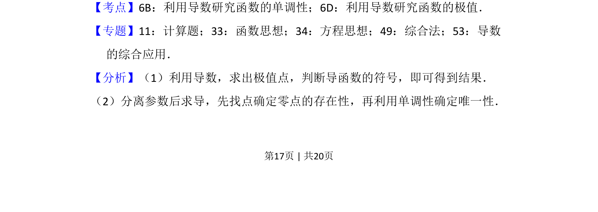
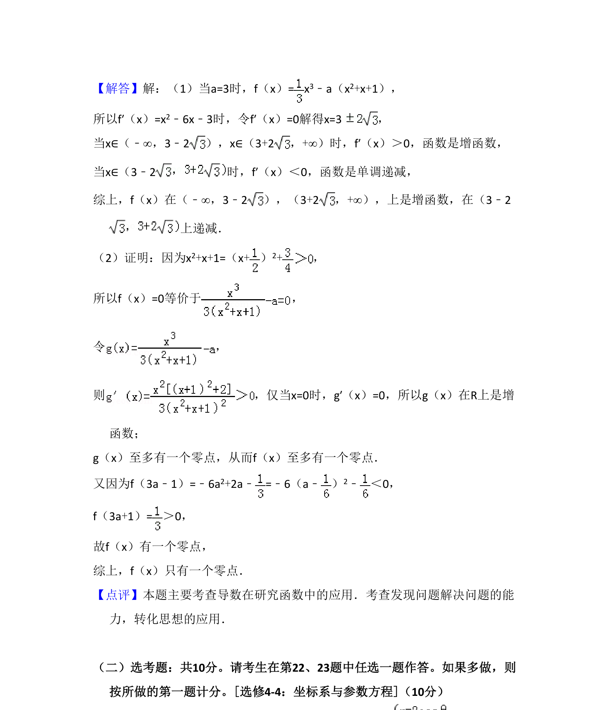

考点：利用导数研究函数的单调性 利用导数研究函数的极值 零点
本题通过导数研究含参函数的单调性，并利用零点存在定理及单调性证明零点唯一性。


📄 原 PDF 第 17 页：
素材/真题/吉林/2008-2024·（吉林）数学高考真题/2018年高考数学试卷（文）（新课标Ⅱ）（解析卷）.pdf
21．（12分）已知函数f（x）= x 3﹣a（x2+x+1）． （1）若a=3，求f（x）的单调区间； （2）证明：f（x）只有一个零点．
【考点】6B：利用导数研究函数的单调性；6D：利用导数研究函数的极值．菁优网版权所有 【专题】11：计算题；33：函数思想；34：方程思想；49：综合法；53：导数 的综合应用． 【分析】（1）利用导数，求出极值点，判断导函数的符号，即可得到结果． （2）分离参数后求导，先找点确定零点的存在性，再利用单调性确定唯一性．